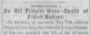

Obituary of Josiah Hedges from the Tiffin (Ohio) Tribune in 1858
 An obituary for Josiah Hedges, brother of "General" James Hedges and also the founder of the city of Tiffin, Ohio in the United States.
Citation and Online Images
"An Old Pioneer Gone - Death of Josiah Hedges," obituary, 23 July 1858, page 2, column 5, The Tiffin tribune, 1848-1859, (Tiffin, Ohio, United States); Chronicling America: Historic American Newspapers, Library of Congress (http://chroniclingamerica.loc.gov/lccn/sn85026279/1858-07-23/ed-1/seq-2/).
Transcript of Obituary [paragraphs added]
[Communicated.]
On Thursday of last week, July 15th, after an illness of nine days, the venerable Josiah Hedges, of this city, departed this life, at the advanced age of 80 years and 3 months.
He was born in Berkley [Berkeley] county, [West] Virginia, on the 9th day of April, 1778.
He left his father's home at an early age, with the determination to carve out his own fortune. His first enterprise on his own account was a trading excursion to New Oleans [Orleans], with fruit, which he flat-boated from Wheeling, Va., to that point, when the time occupied in making the voyage was six weeks, and when but a few adventurous spirits would make the experiment, which was then hazardous and dangerous.
He finally, in 1801, one year before Ohio was admitted as a State of this Union, settled in Belmont county; where he for a number of years was one of its most active and prominent citizens. He was the first sheriff of Belmont county, and also for a term of years the Clerk of the Court.
He then entered into the mercantile business at St. Clairsville. His capital was limited, but by his prudence and sagacity, he increased it slowly and surely. At that time, the merchants of the West bought most of their goods in Philadelphia, and we have frequently listened with interest to the accounts given by the deceased of the manner in which the merchants made their trips after "new goods and supplies." Then they threaded their way, in companies of eight and ten, on horseback, carrying the specie in their saddlebags, to pay for their purchases. Right merry times, too, these old pioneers had in "crossing the mountains" and visiting in the East.
In 1819, Mr. Hedges started a branch store at Mansfield, Ohio, having as a partner, his brother, the late Gen. James Hedges, and afterward Mr. E. Hedges, who still lives at that point.
Subsequently Mr. Hedges removed from St. Clairsville to Mansfield.
Being then of a speculative mind, and being convinced that North western Ohio was one of the Garden Spots of the world, and that it would settle up with remarkable rapidity, Mr. Hedges made the journey to this region. He immediately determined upon entering the land upon which this city is mostly built. At that time foot-paths were worn around it, by persons who had looked at the land. Mr. Hedges then proceeded to the Land Office, and in 1820, at the Land Sales at Delaware, Ohio, he bought the land which was an unbroken forest - a vast solitude - a tangled wild-woods; - a spot where oaks, stalwart hickories, and towering sycamores occupied the places where now the spires of elegant churches, and fine public buildings rear their heads - where now stand fine private residences and splendid buildings, dedicated to business - where thousands act a part, seeking a livelihood in a hundred different ways. Such were the changes that Mr. Hedges witnessed in our now prosperous city.
Mr. Hedges, as we have before said, purchased the land in 1820. In 1822, the first stick of wood was cut upon the town plot of that portion of Tiffin, which is now known as the first ward. In the same year, he erected the first frame house upon the town plot, which is the old building known as the "old Masonic Hall," which was used for a store, and subsequently for a Court House and Church. He also, the same year, erected a flouring mill on the Sandusky, now known as "Hunter's Mill," and a saw mill on Rocky Creek, which drew to Tiffin large numbers of pioneers from every section to get their "gris's and boards." By a prudent and systematic course in disposing of his town lots, Mr. H. had the pleasure of seeing his town increase in population.
For a number of years there was much rivalry between Fort Ball (now the second ward) as to which should be the county seat. By the persevering efforts of Mr. H., and by purchasing much of the property on the Fort Ball side, he succeeded in securing the location on the East side. This was in 1828. He then went to work determined to effect the removal of the United States Land Office, then located at Delaware, to this city. In this he was successful, and from that time onward, Tiffin has progressed rapidly in wealth and population.
In 1831 Mr. Hedges was chosen to represent this county, or the district of which this county was a portion, in the Ohio Legislature. He served one session, but preferred paying more attention to his own private affairs, and declined any further political preferment.
Mr. Hedges in his younger day was a stout, athletic, vigorous man, and retained to a remarkable degree, in his old days, his manly sense and energy of mind, having up to his last and fatal attack, transacted and managed his own business affairs. He was generous and just in his dealings with his fellow men, and scrupulously honest, - benevolent to all christian denominations, having with one or two exceptions, donated the lots upon which their churches are erected, and he was liberal towards all public improvements. He was the Friend of the Poor, as many of the citizens of our city can attest, who will remember his leniency and kindness towards them. Desiring what was his own, he was not grasping or avaricious, he was not cold and heartless; on the contrary, he indulged those with whom he had business transactions, to a degree injurious to himself. In all the relations of life, public or private, he was a just and sincere man. He was a good citizen and a true and steadfast friend. - As a husband he was kind and obliging - as a father affectionate, generous and indulgent. By his kindred, old and young, he will always be gratefully remembered; to him they could always go; his heart was always open to them; his sagacity and foresight was such that his advice and counsel was always sought, and so excellent was his judgment, that he rarely ever erred.
Although not a member of any church, Mr. Hedges was a good and sincere man, and upon his dying couch; he expressed to his friends a willingness to die, and assured them of his unfaltering trust in and dependence on "that Savior who has promised to save all who may turn towards him, in faith and penitence." He passed away tranquilly and quietly as if but entering upon a sleep; without a groan, a sigh, or a struggle, the good old man, took his departure from the scene of his earthly experience, and passed away "like one that draws the drapery of his couch about him, and lies down to pleasant dreams."